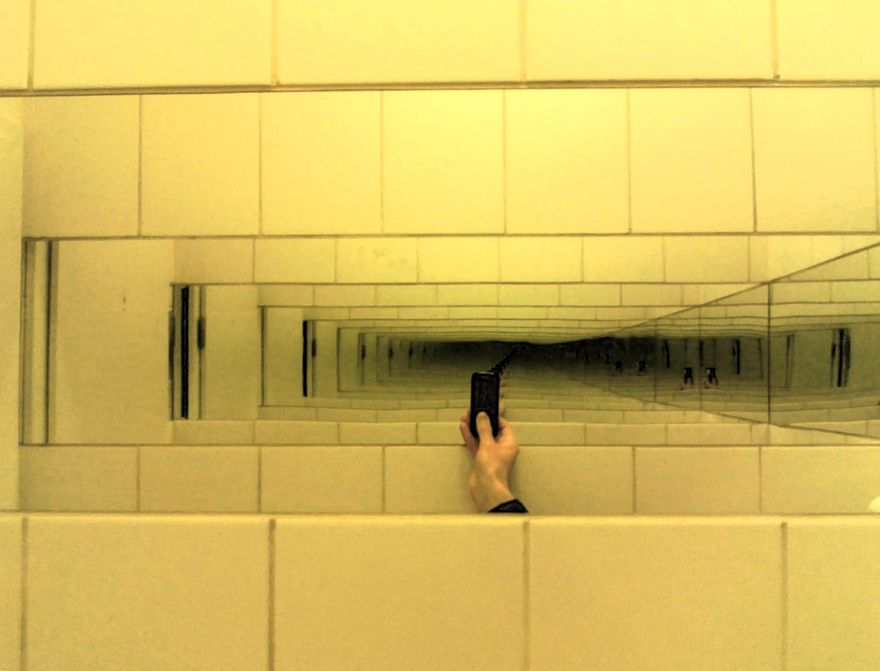
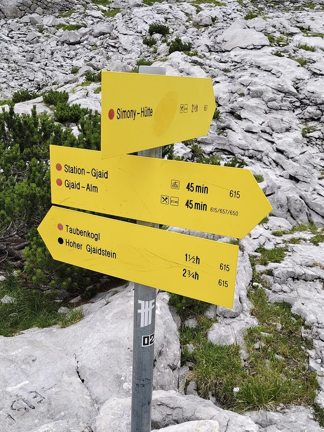

러시아 인형 마트료시카를 열면 똑같이 생긴 조금 작은 인형이 나와요. 그 인형을 열면 또 더 작은 인형이 나오고요. 가장 작은 인형이 나올 때까지 하나씩 모두 열어야 끝나요.
“인형을 연다 → 안에 인형이 있으면 그 인형에게 같은 일을 한다.” 이 한 줄만으로 인형이 몇 개든 모두 열 수 있어요. 어떻게 그럴까요?
코드 아래 💡 코드 설명을 펼쳐 보고, 빈칸이 있으면 채운 뒤 실행해 보세요.
교과서 · Ⅰ 2-1 재귀 구조의 이해
큰 문제를 “같은 모양의 더 작은 문제”로 바꿔 가며 푸는 방식입니다.
재귀 구조는 문제를 해결하는 데 어떤 역할을 할까?
러시아 인형 마트료시카를 열면 똑같이 생긴 조금 작은 인형이 나와요. 그 인형을 열면 또 더 작은 인형이 나오고요. 가장 작은 인형이 나올 때까지 하나씩 모두 열어야 끝나요.
“인형을 연다 → 안에 인형이 있으면 그 인형에게 같은 일을 한다.” 이 한 줄만으로 인형이 몇 개든 모두 열 수 있어요. 어떻게 그럴까요?

러시아 인형 마트료시카를 열면 똑같이 생긴 더 작은 인형이 나옵니다. 마지막 가장 작은 인형까지 다 열어야 끝나죠. 큰 문제 안에 같은 모양의 작은 문제가 들어 있는 구조 — 이것이 재귀 구조입니다.
거울을 마주 보고 놓으면 거울 속에 또 다른 거울이 반복해서 비칩니다. 이처럼 문제나 데이터가 자기 자신을 반복적으로 포함하는 형태가 재귀 구조입니다. 하위 문제가 원래 문제와 같은 구조를 가진다는 것이 핵심입니다.
‘방 청소하기’ 기본 패턴 1. 현재 청소할 방을 선택한다. 2. 방이 깨끗한지 확인한다. 3. 방이 깨끗하지 않으면 청소한다. 4. 더 이상 청소할 방이 없으면 작업을 종료한다. 5. 그렇지 않으면 다음 방으로 이동하여 1번 단계부터 다시 시작한다.
예제 — 방 목록을 재귀로 청소하기
def clean_house(rooms):
if : # 기본 단계(종료 조건)
print('모든 방이 깨끗합니다!')
return
else: # 재귀 단계(재귀 호출)
current_room = rooms[0]
print(current_room, '청소 중...')
rooms.remove(current_room) # 청소한 방을 목록에서 제거
# 남은 목록으로 다시 호출
rooms = ['침실', '욕실', '주방', '거실']
clean_house(rooms)
# 침실 청소 중… → 욕실 → 주방 → 거실 → 모든 방이 깨끗합니다!
| 단계 | 하는 일 | 없으면? |
|---|---|---|
| 기본 단계 (종료 조건) | 더 이상 나눌 수 없는 가장 작은 문제를 직접 해결하고 재귀를 멈춘다 | 무한 호출 → 스택 오버플로 |
| 재귀 단계 (재귀 호출) | 문제를 더 작게 나눠 자기 자신을 다시 호출한다 | 문제가 줄지 않아 끝나지 않는다 |
이 구조는 수학의 수학적 귀납법과 똑같습니다. “n=1일 때 성립” = 기본 단계, “n=k에서 성립하면 n=k+1에서도 성립” = 재귀 단계.
수학적 귀납법 — 이정표 ①에 도착할 수 있다. 이정표 ⓝ에 도착했다면 다음 이정표 ⓝ+1에도 도착할 수 있다. 그러므로 정상에 도착할 수 있다.
재귀 함수 — 정상에 도착하려면 ‘바로 전 이정표까지 가는 문제’를 먼저 해결하고 한 걸음 더 가면 된다. 앞부분을 재귀 호출로 맡긴다.
def reach_peak(n):
if n <= 0: # 기본 단계(종료 조건)
return
else: # 재귀 단계(재귀 호출)
# 바로 전 이정표까지 먼저 해결
print('이정표', n, '도착')
reach_peak(5)
# 이정표 1 도착 → 2 → 3 → 4 → 5
print가 실행되기 때문입니다. 가장 나중에 호출된 함수부터 차례로 끝나므로 작은 n부터 출력됩니다.| 구분 | 수학적 귀납법 | 재귀 함수 |
|---|---|---|
| 개념 | 가장 작은 문제에 대해 참임을 증명하고, 참이라 가정해 다음 문제도 참임을 증명해 전체를 해결 | 자기 자신을 호출해 작은 문제를 해결하고 그 결과로 전체 문제를 해결 |
| 첫 단계 | 기본 단계 — 작은 문제를 직접 해결 | 기본 단계 — 더 이상 나눌 수 없는 문제를 해결하고 재귀를 멈춤 |
| 다음 단계 | 귀납 단계 — 작은 문제가 해결됐다고 가정하고 큰 문제를 해결 | 재귀 단계 — 문제를 더 작게 나누고 재귀 호출로 해결 |

코드를 고쳐서 ▶ 실행하면 출력이 맞는지 바로 알려 줘요. 막히면 힌트부터 열어 보세요.
reach_peak()처럼 계단을 1칸부터 n칸까지 오르는 재귀 함수예요. 기본 단계와 재귀 호출 부분을 채우세요.
def climb(n):
if n <= 0:
___
climb(___)
print(f'계단 {n}칸 올라감')
climb(4)더 오를 계단이 없으면 함수를 끝내요. 다음 호출에는 한 칸 줄어든 문제를 넘겨요.
def climb(n):
if n <= 0:
return
climb(n - 1)
print(f'계단 {n}칸 올라감')
climb(4)숙제 목록을 하나씩 끝내는 재귀 함수인데, 마지막에 IndexError가 나요. 기본 단계가 없어서 빈 목록에서도 [0]을 꺼내려 하거든요. 기본 단계를 추가해 마지막 줄에 숙제를 모두 마쳤어요!가 나오게 하세요.
def do_homework(tasks):
print(tasks[0], '숙제 끝!')
do_homework(tasks[1:])
do_homework(['국어', '수학', '정보'])clean_house()의 2~4번 줄을 떠올려 보세요. 목록이 비었는지 먼저 검사하고 return해요.
def do_homework(tasks):
if not tasks:
print('숙제를 모두 마쳤어요!')
return
print(tasks[0], '숙제 끝!')
do_homework(tasks[1:])
do_homework(['국어', '수학', '정보'])n번 인형부터 차례로 열고, 가장 작은 인형까지 연 다음 다시 거꾸로 닫는 open_doll(n)을 만드세요. 재귀 호출의 앞과 뒤에 print를 하나씩 두면 돼요. n이 0이면 가장 작은 인형까지 열었어요!를 출력하고 멈춰요.
def open_doll(n):
# 기본 단계: n이 0이면?
# 재귀 단계: 열기 출력 → 재귀 호출 → 닫기 출력
pass
open_doll(3)‘열기’는 재귀 호출 전에, ‘닫기’는 재귀 호출 뒤에 출력해요. 닫기는 안쪽 호출이 다 끝나야 실행되니 1번부터 닫혀요.
def open_doll(n):
if n == 0:
print('가장 작은 인형까지 열었어요!')
return
print(f'{n}번 인형 열기')
open_doll(n - 1)
print(f'{n}번 인형 닫기')
open_doll(3)해설 — 멈출 조건이 없으면 호출이 계속 쌓여 결국 한계를 넘고 오류로 멈춰요.
해설 — 가장 작은 문제를 직접 해결하는 부분이 기본 단계예요. “n=k이면 n=k+1도 성립”은 재귀 단계에 해당해요.
오늘 만든 open_doll(3)에서 ‘닫기’가 왜 1번 인형부터 출력됐는지 한 줄로 설명해 보세요.